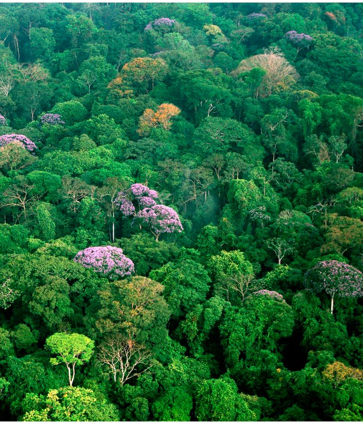
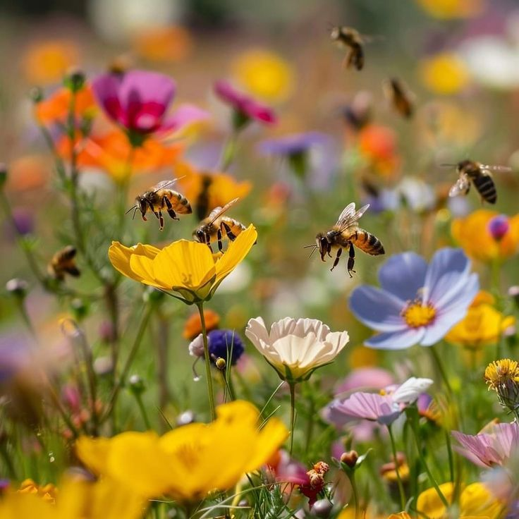
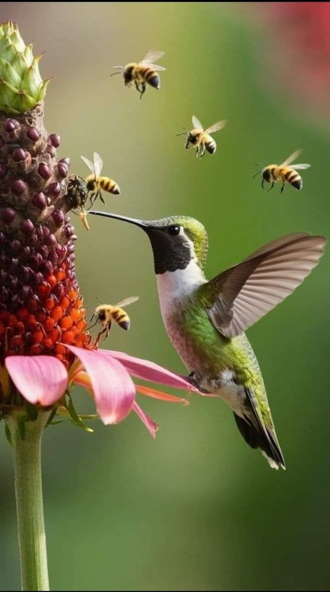
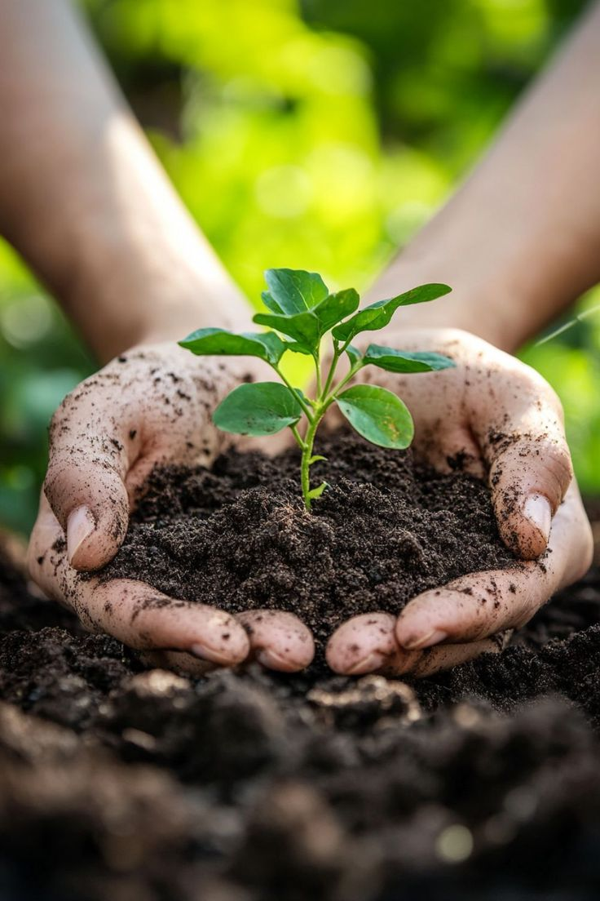
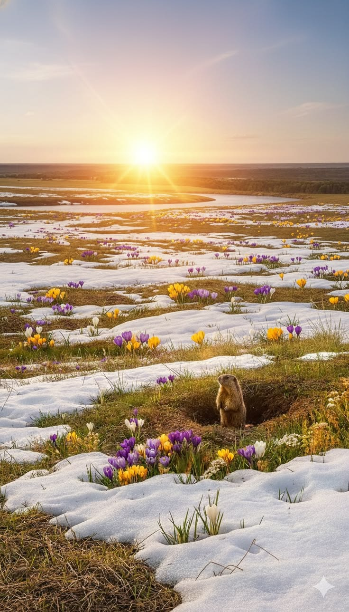
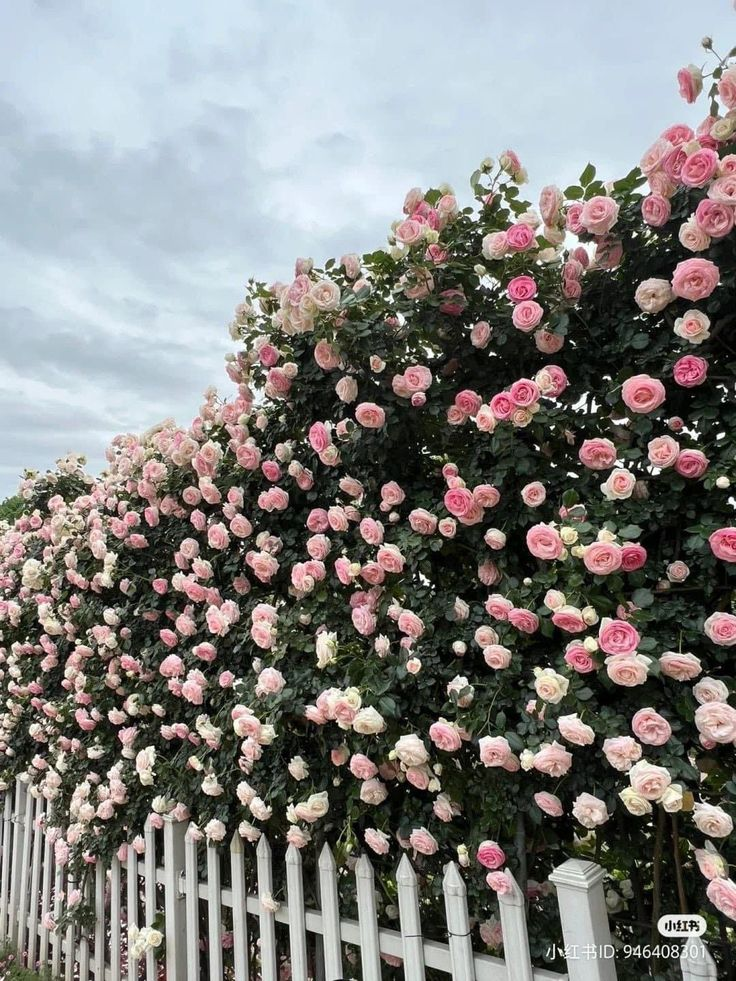
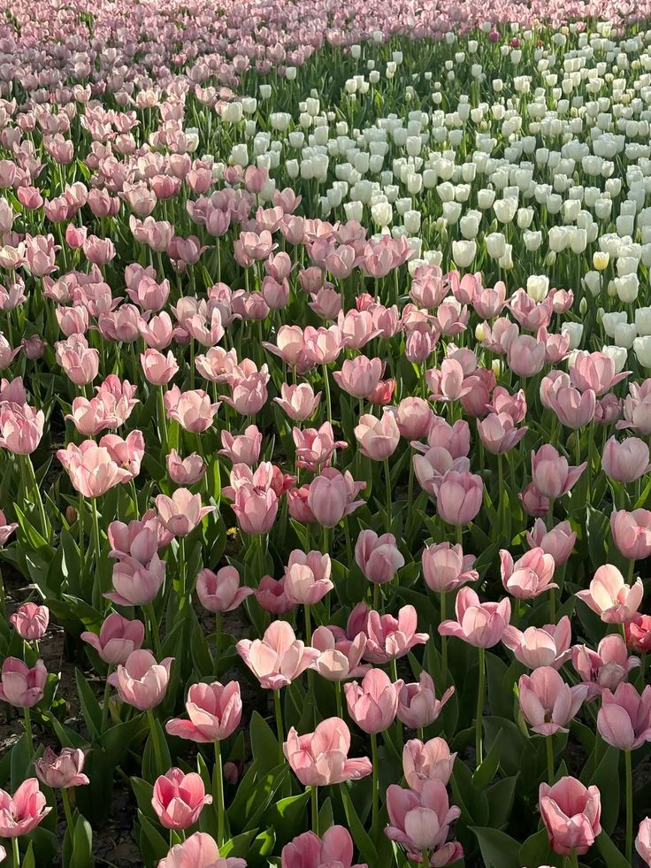

Polenizare
Peste 75% dintre culturile alimentare depind partial de polenizatori, iar florile sunt punctul-cheie al acestui proces.
Învață vizual despre rolul florilor în natură, anatomia lor și cum le îngrijești corect, pas cu pas.
Florile sunt organele de reproducere ale plantelor cu flori (angiosperme) si au un rol vital in continuitatea vietii vegetale. Prin culori, miros si nectar, ele atrag polenizatorii (albine, fluturi, bondari), care transporta polenul de la o floare la alta.
Importanta lor merge dincolo de frumusete: sustin lanturi trofice, ajuta la biodiversitate si contribuie la stabilitatea ecosistemelor. Pentru oameni, florile inseamna si sanatate mentala, inspiratie artistica si un mod de a exprima emotii.

Peste 75% dintre culturile alimentare depind partial de polenizatori, iar florile sunt punctul-cheie al acestui proces.
Florile hranesc insecte, pasari si alte animale, mentinand echilibrul dintre specii in habitate naturale.
Prezenta florilor in spatiile de acasa sau in oras reduce stresul si creste starea de calm si optimism.



Treci cu cursorul peste etichete pentru explicații.
Petale: pot avea culori puternice pentru a atrage insectele polenizatoare.
Sepale: apar de obicei verzi si protejeaza floarea in stadiul de boboc.
Stamine: formate din filament si antera, unde se produce polenul.
Pistil: include stigmat, stil si ovar; dupa fecundare, ovarul devine fruct.
Uda dimineata, moderat, direct la baza plantei. Verifica solul cu degetul: daca primii 2-3 cm sunt uscati, e momentul pentru apa.
Majoritatea florilor prefera lumina naturala filtrata si temperaturi de 18-24°C. Evita curentii reci si soarele direct de la pranz.
Foloseste substrat aerat, cu drenaj bun. Fertilizeaza la 2-4 saptamani in sezonul de crestere, in doze moderate.



Pune o floare alba (de exemplu garoafa) intr-un pahar cu apa si colorant alimentar. Dupa cateva ore, vei observa cum culoarea urca prin tulpina catre petale. Astfel intelegi cum circula apa prin vasele conducatoare ale plantei.